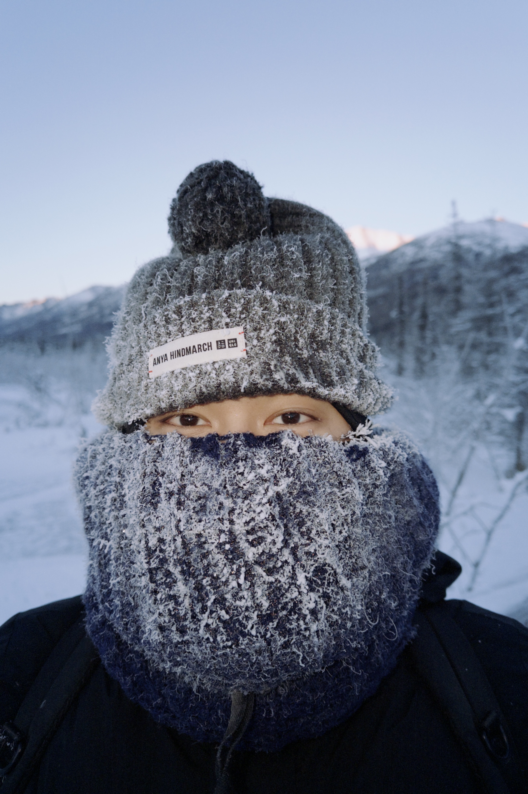

Jiu-jitsu
An interest in movement, responding to another person, and finding a different approach.

A LITTLE ABOUT ME
I’m Brian. I’m interested in data engineering and analysis, but the curiosity that brings me here comes from many places: movement, the outdoors, and the simple enjoyment of figuring something out.
Where that curiosity comes from ↓THE WORLD, AND OUR PLACE IN IT
I think some of the experiences that stay with us are the ones that make us look beyond ourselves. I have enjoyed traveling in Alaska during the winter, experiencing the harsh cold and the rugged outdoors. There is something about being surrounded by that landscape that makes me stop and appreciate the world we have.
Those experiences have made me think about what it means to share that appreciation. How can I take something that inspires me and express it in a way that someone else can explore? In a sense, this is what draws me towards technology. I want to create things that help people see a connection, ask a question, or find beauty in something they might otherwise pass by.
Data gives me one way to do that. A dataset can hold information about a place, a community, or the way people move through the world. The challenge is to give that information a form people can understand and interact with. I am still learning how to do this well, but I think the willingness to explore is a meaningful place to begin.
CREATIVITY & TECHNOLOGY
For a dance project, I chose to express creativity through a Koch snowflake in Python Turtle. I was interested in how a simple rule could develop into something increasingly complex. I saw a similar possibility in movement: a small change in one part of the body can change the experience of the whole.
I think that connection has stayed with me. There is room for creativity within a system, and sometimes its boundaries give us something new to explore. I want to carry that same curiosity into the things I build.
AWAY FROM THE SCREEN
I enjoy having space to move, try something, and learn without needing every moment to produce a result.
An interest in movement, responding to another person, and finding a different approach.
Time to work on strength and pay attention to how my body feels.
The relationship between strength, timing, and coordination keeps me curious.
A way to spend time outside and pay attention to the world around me.
Another space to experiment, make something, and enjoy the process.
STILL LEARNING
In my writing, I once called it “Reckless Learning”: giving myself room to ask the questions I wanted to ask, without being held back by the fear of getting something wrong. I think that is a feeling worth keeping.
See what I’m building ↗